El álbum debut homónimo de 5SOS, lanzado en junio de 2014, marcó el inicio de su carrera como banda internacional. Este álbum tiene un sonido distintivo que fusiona el pop-punk y el pop-rock, y ayudó a la banda a ganar una base de seguidores leales. Canciones como "She Looks So Perfect" y "Don't Stop" se convirtieron en éxitos instantáneos, mostrando la energía juvenil y la frescura del grupo. El disco es una mezcla de temas alegres y enérgicos junto a algunas baladas, con letras que abordan principalmente el amor, las relaciones y las experiencias de la vida adolescente. La recepción fue positiva, consolidando a 5SOS como una de las bandas emergentes más importantes de su generación.

5 SECONDS OF SUMMER
5 Seconds of Summer
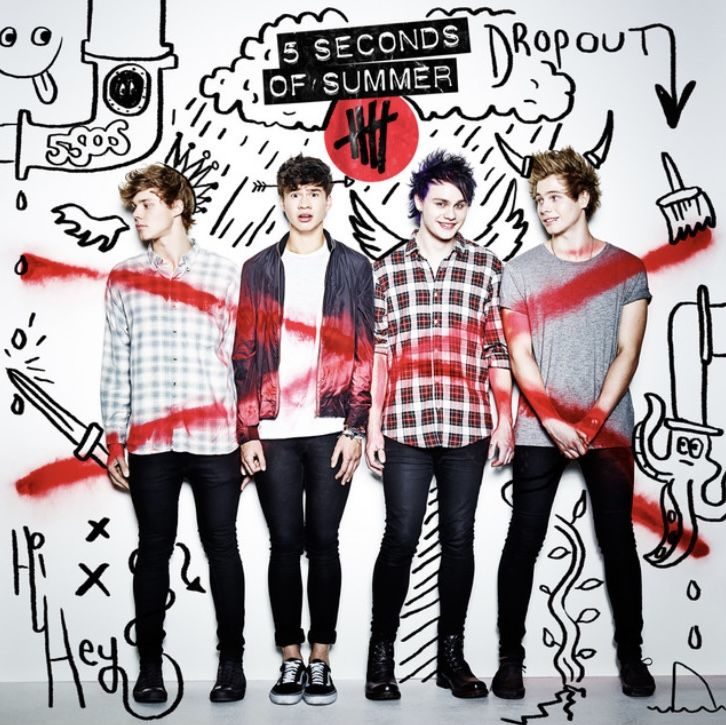
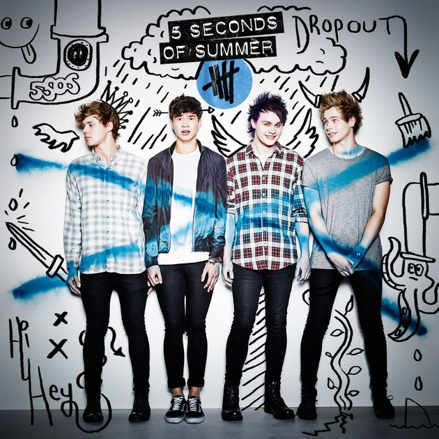
Sounds Good Feels Good
Con el segundo álbum, lanzado en octubre de 2015, 5SOS dio un paso más hacia un sonido más maduro y pulido. Sounds Good Feels Good mantiene la esencia pop-punk, pero introduce influencias más amplias, como el rock alternativo y el power pop. La banda también comenzó a experimentar más con las letras, tratando temas de conflictos internos, crecimiento personal y desamor. Canciones como "Hey Everybody!" y "Jet Black Heart" se destacan por su intensidad emocional y su producción más sofisticada. Este álbum mostró la evolución del grupo tanto en términos de su sonido como de su estilo lírico, y fue muy bien recibido por la crítica y los fanáticos.
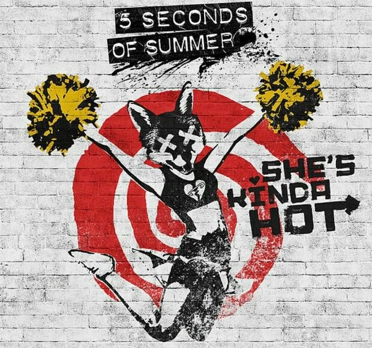
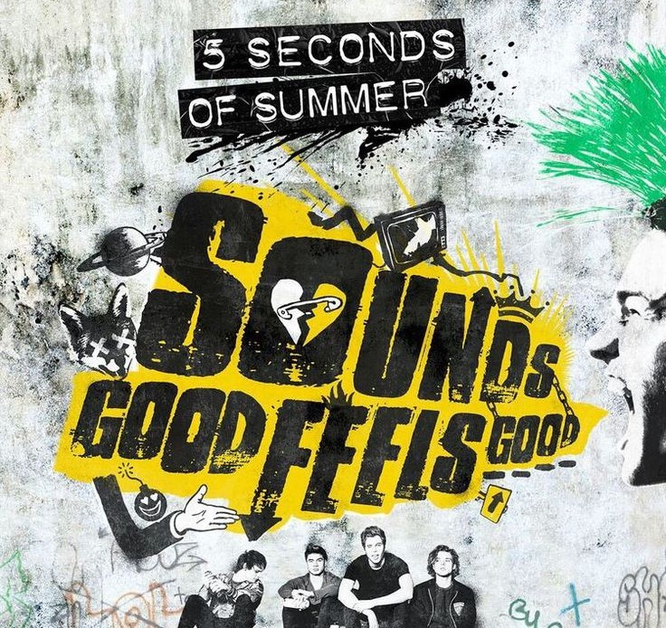
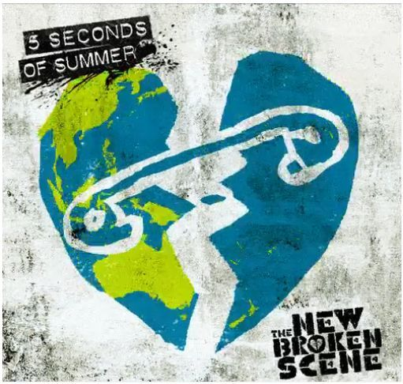
Youngblood
Tres años después de Sounds Good Feels Good, 5SOS lanzó Youngblood en junio de 2018, un disco que marcó una clara transición hacia un sonido más pop y experimental. Con este álbum, la banda se apartó del sonido pop-punk que los caracterizaba y adoptó una estética más contemporánea y sintética, incorporando elementos del pop electrónico y el rock alternativo. Las canciones de Youngblood son mucho más variadas en términos de estilo, con toques de música electrónica, R&B y rock. El tema que da nombre al álbum, "Youngblood", fue un éxito global y es uno de los mayores logros de la banda hasta la fecha. Con letras que exploran la juventud, las relaciones complicadas y la independencia, este álbum consolidó a 5SOS como una banda dispuesta a evolucionar con el tiempo.
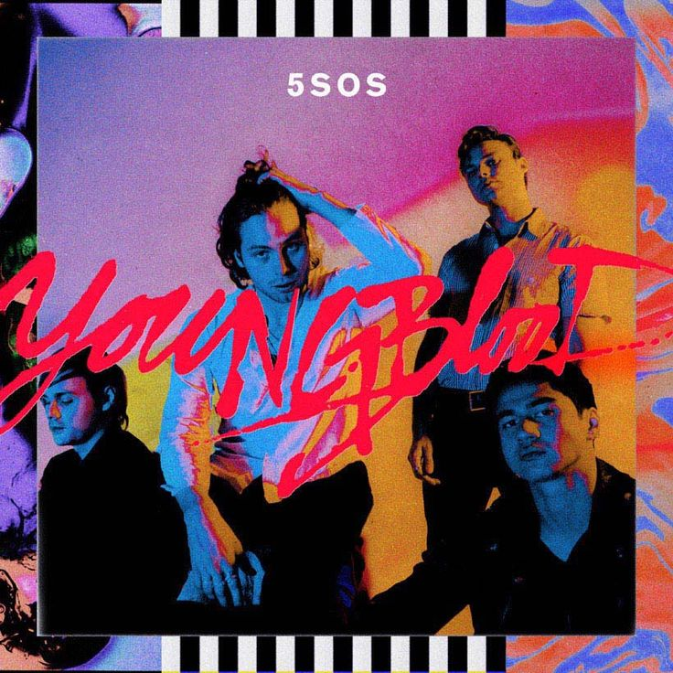
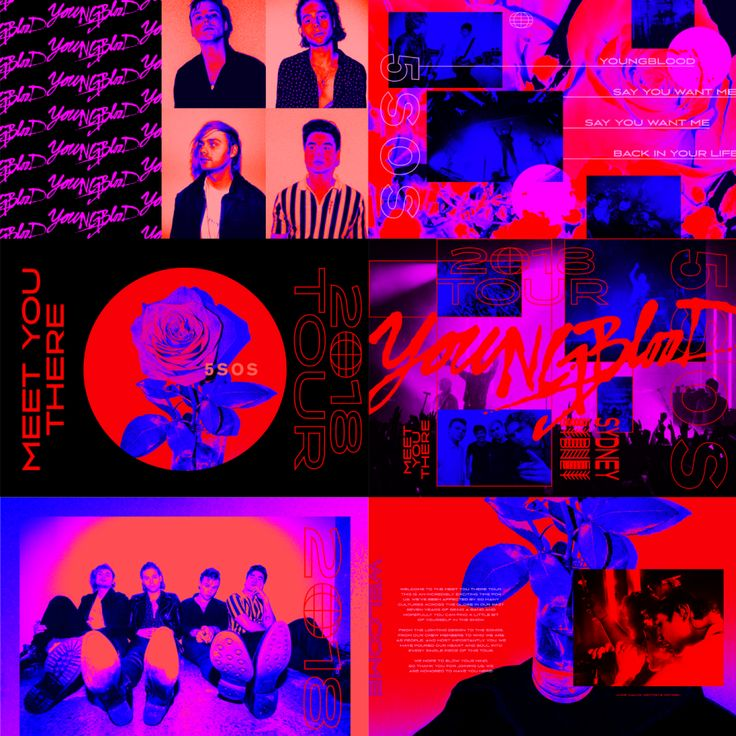
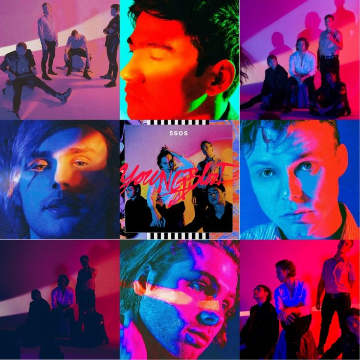
Calm
En marzo de 2020, 5SOS lanzó Calm, un álbum que continúa la tendencia de su sonido moderno y experimental, pero con un enfoque aún más introspectivo. Este disco incorpora más influencias del pop rock y el indie, y se aleja un poco de la electrónica de Youngblood, pero aún conserva la misma frescura y sofisticación. Las canciones como "Easier" y "Teeth" exploran temas como el desamor, las dificultades emocionales y la lucha interna, mientras que otras, como "Wildflower", presentan una energía más optimista. Calm fue aclamado por su capacidad para fusionar la accesibilidad del pop con la complejidad lírica y sonora, mostrando a una banda madura, capaz de reinventarse sin perder su esencia. Este álbum se lanzó en un año particularmente desafiante debido a la pandemia, pero aún así logró tener un impacto significativo en las listas internacionales.
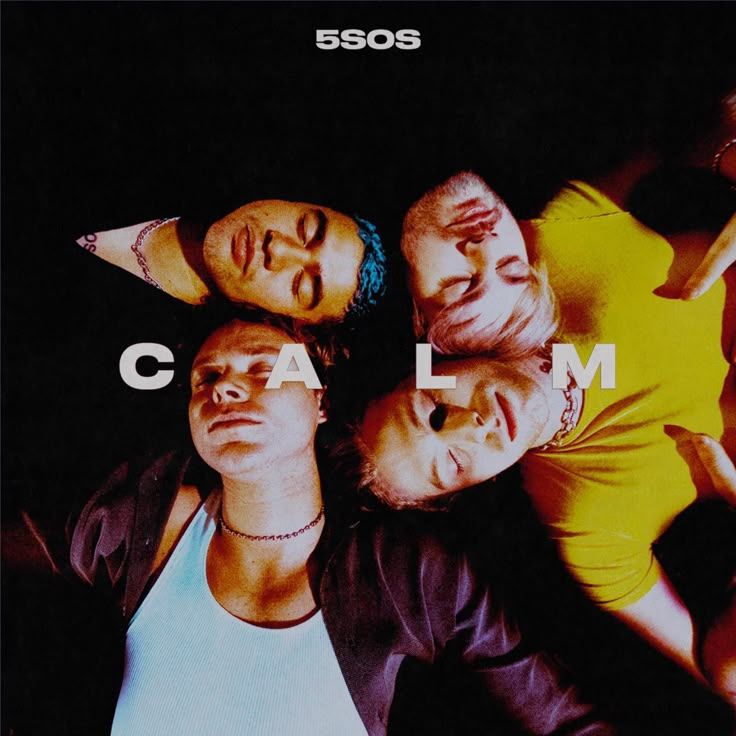
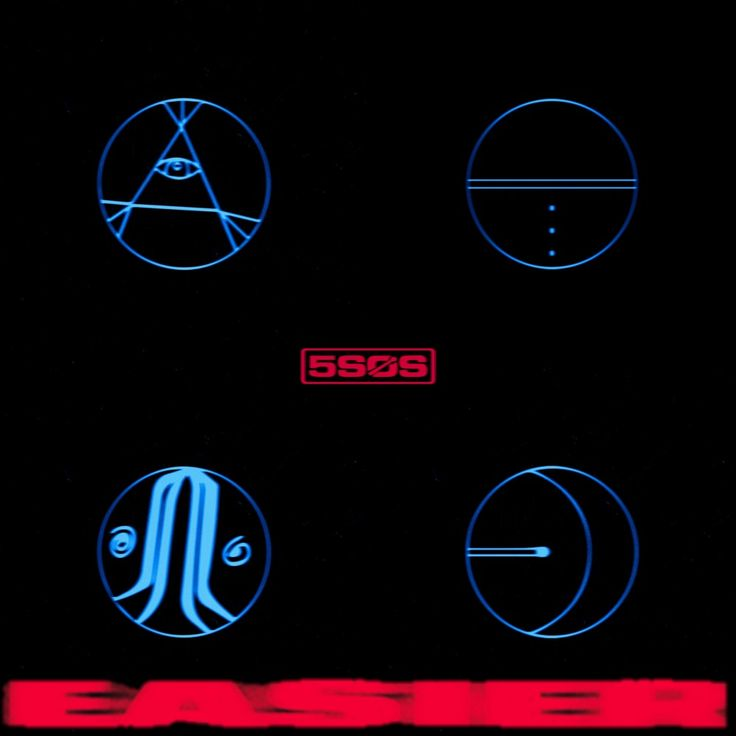
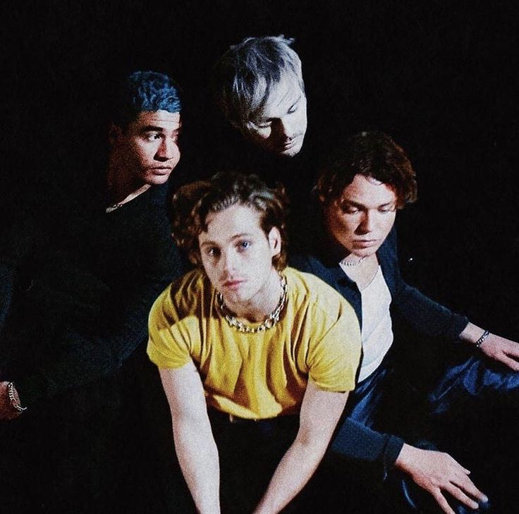
5sos5
El más reciente álbum de 5SOS, 5SOS5, lanzado en septiembre de 2022, representa un giro aún más atrevido y diverso en su música. El álbum mezcla diversos géneros, como el pop, el rock alternativo y el funk, y presenta una exploración más profunda de la madurez emocional y la introspección. Con canciones como "Complete Mess" y "Take My Hand", 5SOS5 explora las complejidades de la vida adulta, el amor y la superación personal. El álbum se destaca por su producción pulida y sus letras sinceras, lo que le permite conectar con una audiencia más amplia, mientras sigue siendo un reflejo de la evolución de la banda a lo largo de los años. 5SOS5 demuestra que 5SOS sigue siendo una banda que no teme reinventarse, explorando nuevos sonidos y temas mientras mantiene una base sólida de seguidores.
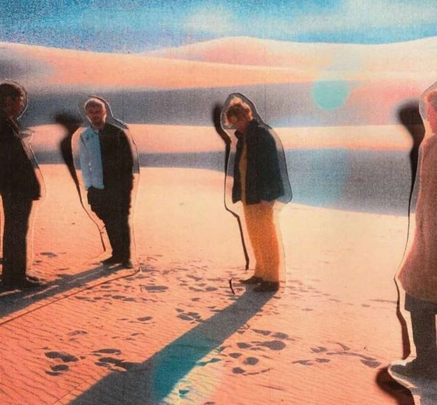
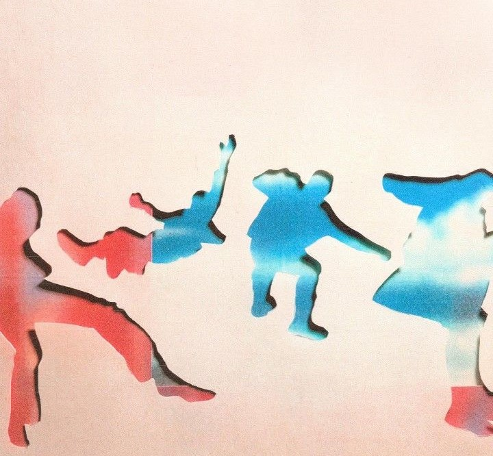
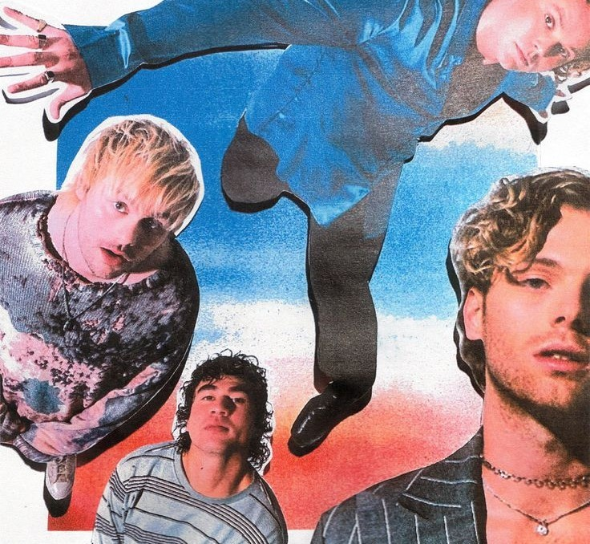